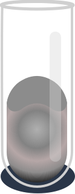
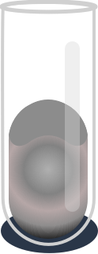

OXYGEN
Periodic Content

Oxygen
Element
8
Atomic Number
16p
Block
O
Symbol
15.999
Atomic Weight
Diatomic Non-Metal
Element Group
Physical Properties
Colourless
Colour
Gas
Phase
54.36 K
Melting Point
90.188 K
Boiling Point
1.429 g/L
Density
54.361 K, 0.1463 kPa
Triple Point
154.581 K, 5.043
Critical Point
(O2) 0.444 kJ/mol
Heat of Fusion
(O2) 6.82 kJ/moll
Heat of Vap
(O2) 29.378 J/(mol·K)
Molar heat Capacity
Combustions
As dioxygen, two oxygen atoms are chemically bound to each other. The bond can be variously described based on level of theory, but is reasonably and simply described as a covalent double bond that results from the filling of molecular orbitals formed from the atomic orbitals of the individual oxygen atoms, the filling of which results in a bond order of two. More specifically, the double bond is the result of sequential, low-to-high energy, or Aufbau, filling of orbitals, and the resulting cancellation of contributions from the 2s electrons, after sequential filling of the low σ and σ* orbitals; σ overlap of the two atomic 2p orbitals that lie along the O-O molecular axis and π overlap of two pairs of atomic 2p orbitals perpendicular to the O-O molecular axis, and then cancellation of contributions from the remaining two of the six 2p electrons after their partial filling of the lowest π and π* orbitals.
This combination of cancellations and σ and π overlaps results in dioxygen's double bond character and reactivity, and a triplet electronic ground state. An electron configuration with two unpaired electrons, as is found in dioxygen orbitals (see the filled π* orbitals in the diagram) that are of equal energy—i.e., degenerate—is a configuration termed a spin triplet state. Hence, the ground state of the O2 molecule is referred to as triplet oxygen. The highest energy, partially filled orbitals are antibonding, and so their filling weakens the bond order from three to two. Because of its unpaired electrons, triplet oxygen reacts only slowly with most organic molecules, which have paired electron spins; this prevents spontaneous combustion.
Electron Energy Levels
A configuration interaction study of the lower‐lying electronic energy levels of molecular oxygen is made. With the 1s and 2s shells kept filled, the remaining eight electrons are distributed among the twelve spin‐orbitals arising from the 2p levels on each atom. The atomic functions are represented as Gaussians, which are poor atomic functions but facile integrands in many‐center integrals. The molecular orbitals are formed as symmetrical linear combinations of the atomic orbitals, simply for convenience. Inclusion of all configurations implies complete equivalence of all possible constructions of linear combinations.
Phases
 

Gaseous Oxygen
At standard temperature and pressure, two atoms of the element bind to form dioxygen, a colorless and odorless diatomic gas with the formula. This is an important part of the atmosphere and diatomic oxygen gas constitutes 20.8% of the Earth's atmosphere.
Solid Oxygen
Solid oxygen forms at normal atmospheric pressure at a temperature below 54.36 K (−218.79 °C, −361.82 °F). Solid oxygen O2, like liquid oxygen, is a clear substance with a light sky-blue color caused by absorption in the red part of the visible light spectrum.
Liquid Oxygen
Liquid oxygen has a pale blue color and is strongly paramagnetic; it can be suspended between the poles of a powerful horseshoe magnet.[1] Liquid oxygen has a density of 1.141 g/cm3 (1.141 kg/L or 1141 kg/m3) and is cryogenic with a freezing point of 54.36 K (−218.79 °C; −361.82 °F) and a boiling point of 90.19 K (−182.96 °C; −297.33 °F) at 101.325 kPa (760 mmHg).
Isotopes of Oxygen
Naturally occurring oxygen is composed of three stable isotopes, 16O, 17O, and 18O, with 16O being the most abundant (99.762% natural abundance).
Most 16O is synthesized at the end of the helium fusion process in massive stars but some is made in the neon burning process.17O is primarily made by the burning of hydrogen into helium during the CNO cycle, making it a common isotope in the hydrogen burning zones of stars. Most 18O is produced when 14N (made abundant from CNO burning) captures a 4He nucleus, making 18O common in the helium-rich zones of evolved, massive stars.
Dioxygen
The common allotrope of elemental oxygen on Earth is called dioxygen, O2, the major part of the Earth's atmospheric oxygen (see Occurrence). O2 has a bond length of 121 pm and a bond energy of 498 kJ·mol−1, which is smaller than the energy of other double bonds or pairs of single bonds in the biosphere and responsible for the exothermic reaction of O2 with any organic molecule. Due to its energy content, O2 is used by complex forms of life, such as animals, in cellular respiration.
Trioxygen
Trioxygen (O3) is usually known as ozone and is a very reactive allotrope of oxygen that is damaging to lung tissue. Ozone is produced in the upper atmosphere when O2 combines with atomic oxygen made by the splitting of O2 by ultraviolet (UV) radiation. Since ozone absorbs strongly in the UV region of the spectrum, the ozone layer of the upper atmosphere functions as a protective radiation shield for the planet.[
H3 - Tritium
H3 is known as tritium and contains one proton and two neutrons in its nucleus. It is radioactive, decaying into helium-3 through beta decay with a half-life of 12.32 years. It is so radioactive that it can be used in luminous paint, making it useful in such things as watches. The glass prevents the small amount of radiation from getting out. Small amounts of tritium are produced naturally by the interaction of cosmic rays with atmospheric gases; tritium has also been released during nuclear weapons tests. It is used in nuclear fusion reactions, as a tracer in isotope geochemistry, and in specialized self-powered lighting devices. Tritium has also been used in chemical and biological labeling experiments as a radiolabel.
History
In the early 1500s the alchemist Paracelsus noted that the bubbles given off when iron filings were added to sulfuric acid were flammable. In 1671 Robert Boyle made the same observation. Neither followed up their discovery of hydrogen, and so Henry Cavendish gets the credit. In 1766 he collected the bubbles and showed that they were different from other gases. He later showed that when hydrogen burns it forms water, thereby ending the belief that water was an element. The gas was given its name hydro-gen, meaning water-former, by Antoine Lavoisier.
In 1931, Harold Urey and his colleagues at Columbia University in the US detected a second, rarer, form of hydrogen. This has twice the mass of normal hydrogen, and they named it deuterium.